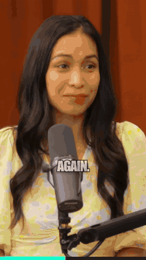
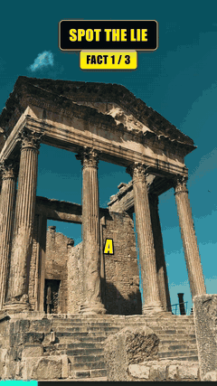
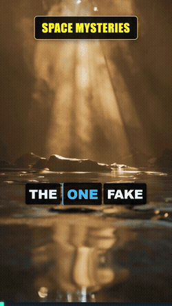

Turn a long video into Shorts, on your own PC.
Paste a link or drop in a podcast, interview or game video. ShortsFlow finds the best moments, crops them to vertical, follows whoever is speaking and adds word-by-word captions. Free, open source, no watermark, no credits.

How it works
Three steps, no account needed to clip a video.
Add a video
Paste a YouTube link or upload a file from your computer, in the browser app or from the command line.
It finds the moments
Local speech recognition reads what is said, an AI scores the hooks, and every clip comes with the reason it was picked.
Review and export
Preview each short, change the caption style, trim it, add your logo and handle, then download the vertical video.
What it makes
Real outputs. Each one is small here; the exported videos are much sharper.


Try it
Pick whichever is easiest.
Windows installer
Download, run it and open ShortsFlow from your desktop. No Python or API key to install first.
Any computer
Needs Python 3.12.
pip install "shortsflow[clip]" shortsflow doctor shortsflow clip my_video.mp4
Nothing to install
Open the notebook, run the cells and use the link it prints. Free GPU on Google Colab.
Your videos stay on your PC
Local by default.
Nothing is sent anywhere unless you add an API key or switch on a cloud feature. The optional parts are AI text from Gemini or Groq, Gemini picture descriptions, Google Drive upload, and the place names in trip recaps, which send rounded GPS to the free OpenStreetMap service. Each one can be turned off.
Honest limits: speech recognition is slow without an NVIDIA graphics card, and the quality of titles depends on the AI model you use.
And more
30+ formats
Facts quizzes, explainers, top-5 lists, stories and more, from just an idea.
Dubbing
Translate a video's speech and re-voice it, with a choice of tone and voice speed.
Game footage
Finds story and action moments, even silent fights, and picks the framing.
For agents
An MCP server and a REST API, so other tools can drive it.